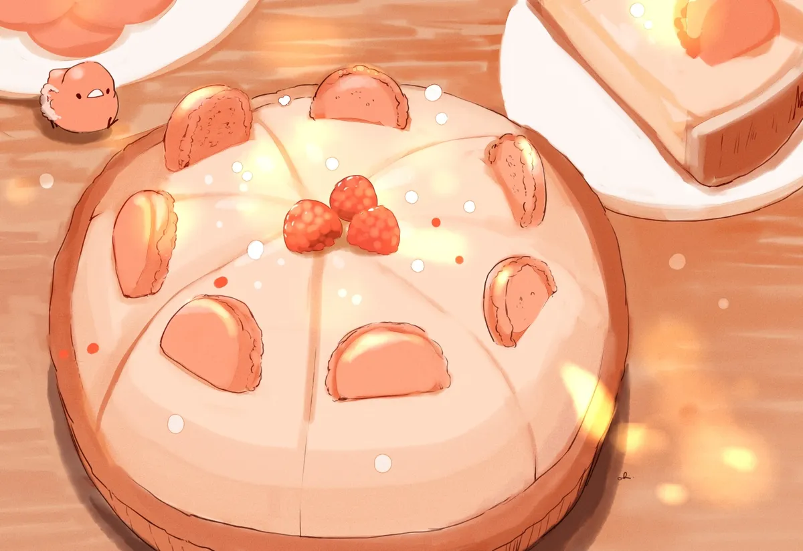

Heavenly Raspberry Dessert
Light-tasting and delicious! My mother's famous dessert recipe has completed many holiday meals and makes a stunning summery cake. This works beautifully with strawberries as well.
Ingredients
- 1 angel food cake
- 2 packages Raspberry-flavored gelatin mix
- 1 ¼ cups boiling water
- 1 package frozen raspberries in syrup, thawed and undrained
- 1 pint heavy whipping cream
Instruction
- Butter a tube pan. Break angel food cake into chunks; set aside.
- Stir raspberry gelatin and boiling water together in a bowl until gelatin is dissolved; place gelatin in the refrigerator to cool slightly, about 10 minutes. Stir raspberries with syrup into gelatin.
- Beat cream in a chilled glass or metal bowl with an electric mixer until soft peaks form; fold whipped cream into raspberry mixture.
- Pour about ¼ cup of raspberry mixture into prepared pan. Place ⅓ of cake chunks into pan; pour ⅓ of remaining raspberry mixture over cake. Repeat layering with remaining ingredients, ending with the raspberry mixture. Chill in refrigerator until firm, about 2 hours.
- To remove from pan, center a serving plate over tube pan; invert.
Nutrition
| For |
Per Serving |
| Calories: |
357kcal |
| Fat: |
18g |
| Carbs: |
47g |
| Protein: |
5g |
Back